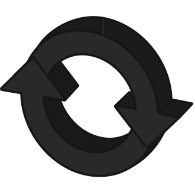
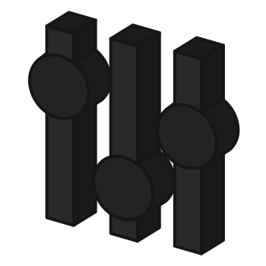

Universal Consistency
Eliminate fragmentation in modular world and provide a unified one-chain experience through Initia’s chain architecture and product stack.

Guided Sovereignty
Customize every parameter of your application chain with Initia’s rollup framework while staying connected with the greater Initia ecosystem.
Full-featured, product-ready application blockchains powered by the OPinit Stack